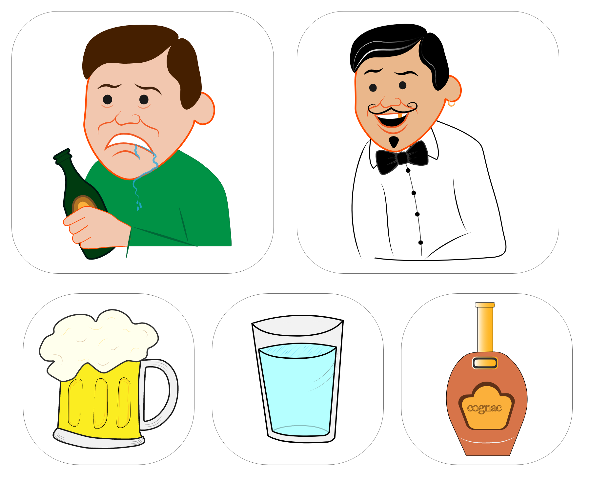
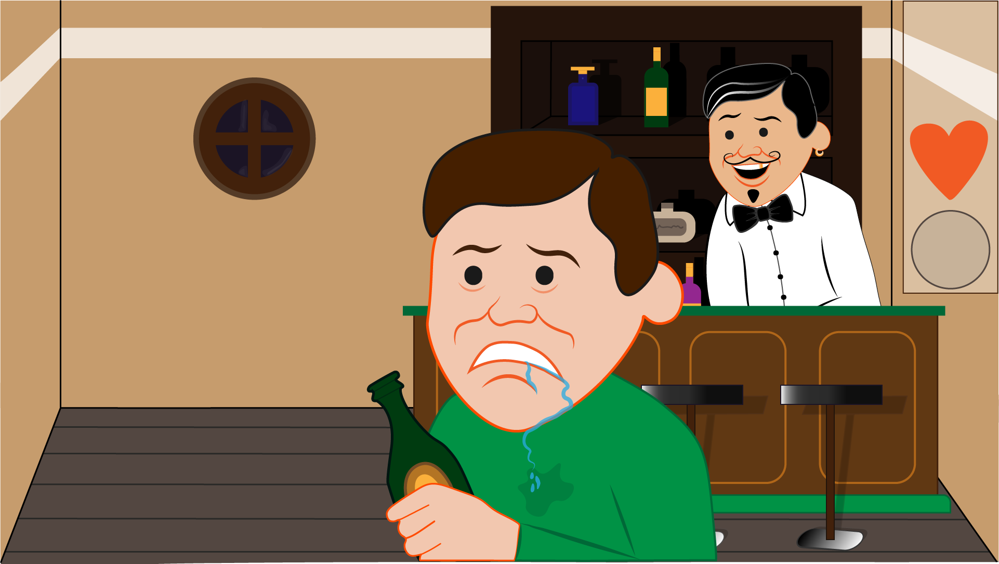

TEMAOPGAVE
SPIL
STIL
Det første vi skulle gøre var at vælge hvilken stil vi ville udvikle vores spildesign i. Vi kunne vælge mellem de følgende stile:
Kawaii, Two Dots, Year Walk, Flat Design, Space up, G30, Toca Doctor, Toca Band, Year Walk, Liza Vertudaches, Joan Cornella, Matisjonen og Jéróme Masi.
Jeg valgte at designe mit spil i en Joan Cornella-stil. Jeg har gjort brug af den rød/orange stroke som Cornella benytter. Derudover har jeg lavet min egen fortolkning af det akavede udtryk som Cornellas karakterer har.
SPIL-IDÉ
PAPIRPROTOYPE
Herefter begyndte jeg at planlægge, hvad der skulle ske i mit spil. Til det lavede jeg en papirprototype for at få en hurtigt overblik over hvad mit spil skulle kunne.
SPILLET
En mand på en bar er alt for fuld. Som spiller, er det din opgave at gøre ham mere ædru, så han tager hjem. På skærmen falder en masse cognacflasker, øl- og vandglas ned. Trykker du enten et af ølglassene eller en af cognacflaskerne væk, bliver manden mere ædru og du får 1 point. Trykker du derimod på et af vandglassene, mister du 1 liv. Du har 3 liv i alt. Du skal fange minimum 15 ølglas/cognacflasker (15 points) for at gennemføre spillet.

AKTIVITETSDIAGRAM OG STATE MACHINE DIAGRAM
For at beskrive spillets interaktive systemer, skulle vi oprette et aktivitetsdiagram. Aktivitetsdiagrammet beskriver en aktivitet, hvor ting sker i en bestemt rækkefølge, men hvor det ikke altid er det samme der sker hver gang aktiviteten udføres.
Senere i processen skulle vi også lave et state machine diagram. Dette form for diagram er mere detaljeret. Det fortæller hvilke "states" aktiviterne er i. Diagrammet viser disse "states", hvordan de er forbundet og hvad der kan lede fra en state til en anden.
Illustrator
Jeg har gjort brug af asymmetri på spillets karakterer, for at gøre dem mere livlige. Jeg har brugt solid drawing til spil-elementerne (øllene, vandglassene og cognacflaskerne) for at gøre dem mere tredimensionelle og livagtige. Figurerne bærer præg af at være computer-genereret. Det er med sit tegneserieagtige udtryk tydeligt, at der er tale om et digitalt design. Udover det er karaktererne, genstandene og omgivelserne virkelighedsnære. Alle karakterer, spilelementer og spilskærme er rentegnet efter håndtegnede skitser i Illustrator.
FIGURER OG SPILELEMENTER
SPILSKÆRM
Javascript
Alt det overstående bliver gjort levende ved brug af JavaScript.
Med JavaScript kan vi vælge ethvert HTML-element ved brug af funktionen querySelector (f.eks. document.querySelector("#vand_container"). For at gøre disse spilelementer levende, tilføjer vi events, som f.eks. et klik. I mit spil kan det bl.a. se således ud: "document.querySelector("#vand_container").addEventListener("click", forsvind_glas);" . Mit spil ved nu, at når der klikkes på "#vand_container", skal det gå videre til funktionen "function forsvind_glas()", der igen fortæller, at glassen skal forsvinde (ved at vælge forsvindingsanimationen i CSS) og genstartes i en random position.